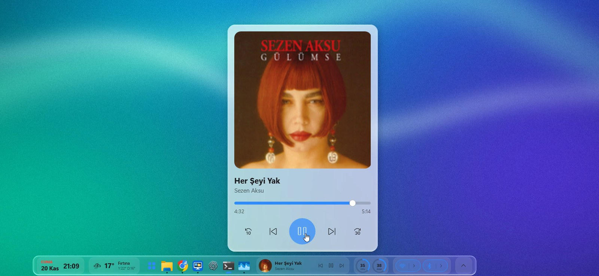
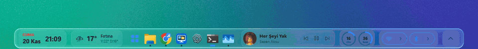
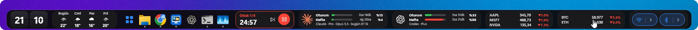
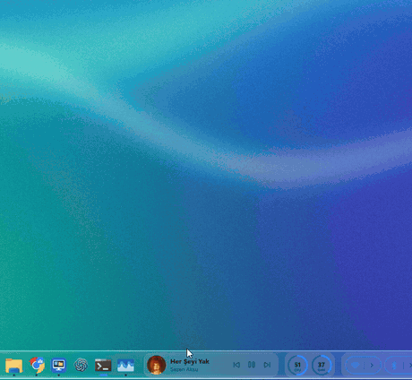
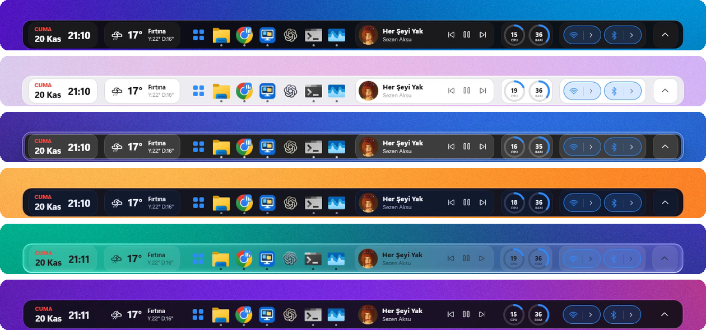
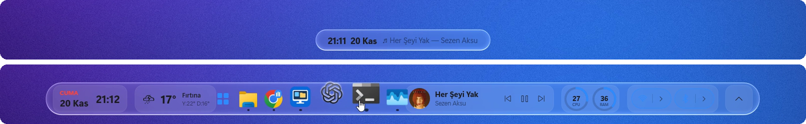
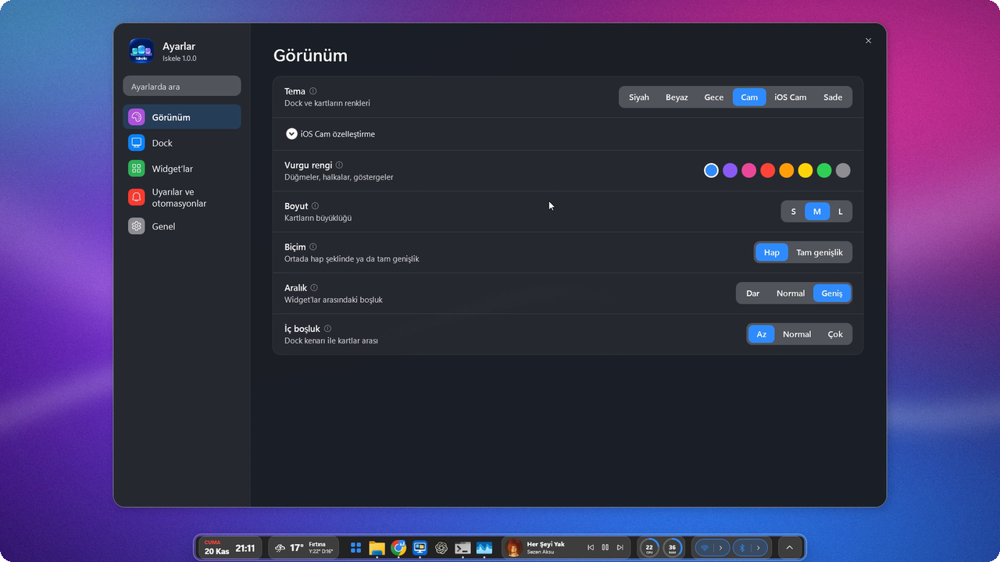
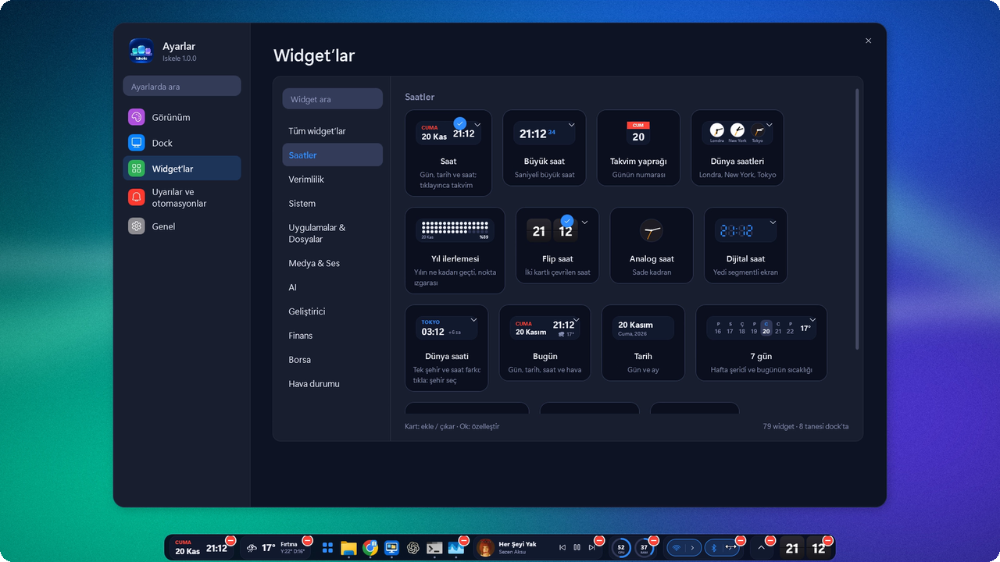

Windows görev çubuğunu 79 widget'lı, şık bir dock'a çevirin. Tamamen ücretsiz ve açık kaynak.

Saatten hava durumuna, müzikten AI limitlerine kadar ihtiyacınız olan her şey tek bir şeritte.
Simgelerin üzerine gelin, Mac'teki gibi yumuşakça büyüsünler. Sabitlenmiş uygulamalar, açık pencereler ve Başlat tek yerde.

Flip saat, 4 günlük hava tahmini, pomodoro, Claude ve Codex kullanım limitleri, borsa, kripto, CPU/RAM ve çok daha fazlası.

Spotify, YouTube Music ya da Windows'ta ne çalıyorsa: kapak, ilerleme çubuğu ve kontroller tek tıkla önünüzde.

Siyah, Beyaz, Cam, Gece, canlı kırılmalı iOS Cam ve Sade.

Ekranın ortasında küçük bir ada; üzerine gelince tam dock'a dönüşür. İsterseniz üst kenarda.

Tema, renk, boyut ve aralık; her değişiklik canlı.

Widget seçiciden istediğinize tıklayın, anında dock'ta.

IskeleSetup.exe dosyasını indirin. Ek bir program ya da .NET kurmanız gerekmez.
Windows mavi bir uyarı gösterirse önce Ek bilgi'ye, sonra Yine de çalıştır'a tıklayın.
Kur düğmesine basın; Iskele birkaç saniyede açılır ve görev çubuğunuzun yerini alır. Kapatınca her şey eski haline döner.
Uyarının nedeni: Iskele ücretsiz bir proje ve dosya ücretli bir dijital imza taşımıyor. Kaynak kodu herkese açık; dosyanın değişmediğini SHA256 değeriyle doğrulayabilirsiniz.
Evet. Ücret, abonelik, reklam ya da hesap yok. Iskele açık kaynaklıdır (GPL-3.0); kodunu herkes inceleyebilir ve geliştirebilir.
Evet. Iskele'yi kapattığınızda görev çubuğu geri gelir. Program beklenmedik biçimde kapansa bile ayrı bir bekçi süreç onu geri getirir. Acil durumda: %LOCALAPPDATA%\Programs\Iskele\Iskele.exe --restore
Iskele Ayarlar → Genel → Iskele'yi kaldır, ya da Windows Ayarlar → Uygulamalar → Iskele → Kaldır. Görev çubuğu otomatik geri gelir.
Hiçbir yere. Ayarlar ve notlar yalnızca bilgisayarınızda tutulur. Hava durumu, borsa gibi widget'lar yalnızca dock'ta gösterildiklerinde ilgili herkese açık servisten veri alır.
Varsayılan ayarlarla hayır: Iskele ekran alanını değiştirmez ve Windows'a kalıcı ayar yazmaz.
Elbette! Hata bildirimi, öneri ya da kod katkısı için GitHub sayfamıza göz atın.